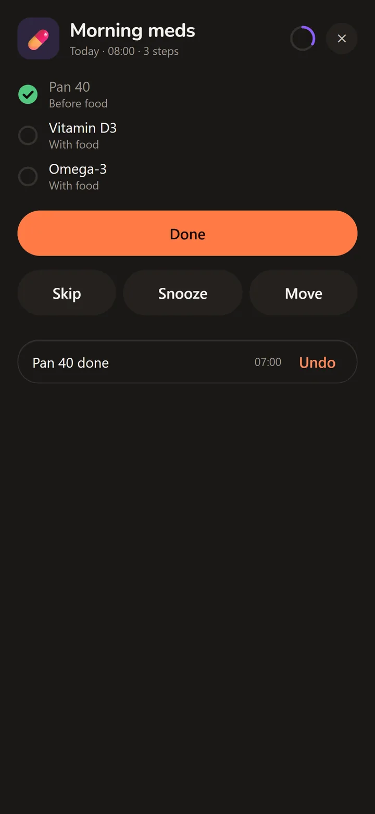
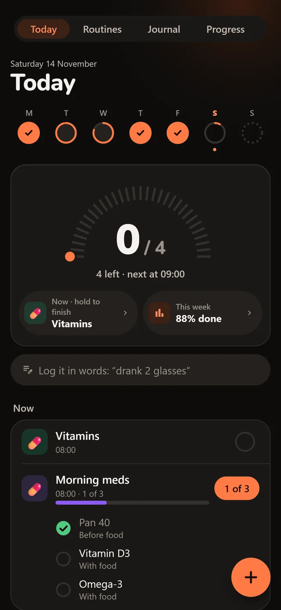
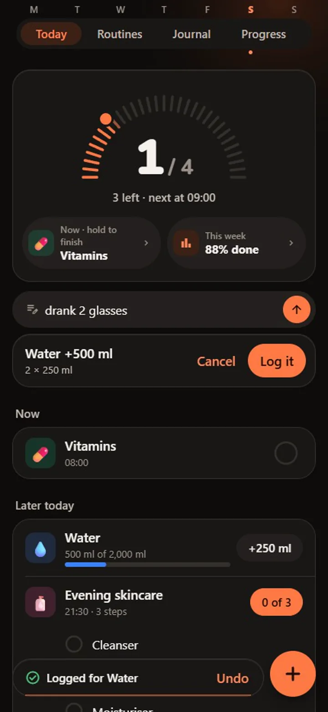
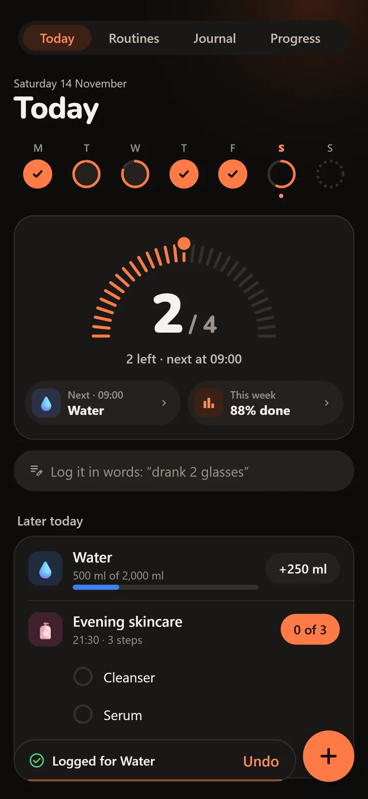
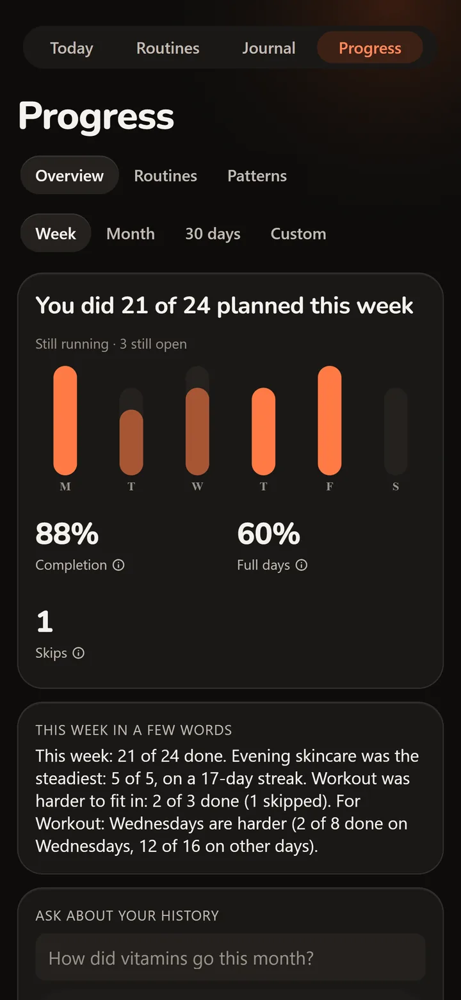

One tablet at a time.
Pan 40 before breakfast, Vitamin D3 and Omega-3 with it. Each item reminds you at its own time and ticks on its own, right from the notification.
Pan 40 before breakfast, Vitamin D3 and Omega-3 with it. Each item reminds you at its own time and ticks on its own, right from the notification.
What's now, what's next and what's done, on one ring. Swipe a row to finish it, or skip it with a reason.
Type it the way you'd say it. Everarc finds the routine and logs it once you say yes. The model runs on your phone.
Cleanser, serum, moisturiser. Checklists keep their place, and a routine you only half finished stays honest about it.
21 of 24 done this week. Charts, a 12-week view and streaks that count rest days fairly, all worked out on the phone.





bytes of your routines ever leave your phone. There's no server to send them to.
The database and every photo are encrypted with a key kept in the phone's secure storage.
Face ID or fingerprint, and private routines that only say "A routine is due" on the lock screen.
One encrypted file you keep, or move to a new phone straight over your own Wi-Fi.
Tick each tablet on its own, before, with or after meals. Count the pack, see when it runs low, and check it lasts before a trip. Try it:
An alarm for the doses you can't miss.
Plain words, matched on the phone.
Rest days don't break a streak; days you planned and missed do.
Guides line up every shot. Compare two days, or play them as a timelapse.
Fifteen languages, chosen in Settings, with your own listed first.
Open it, tick it, close it. Most days that's all Everarc asks. The rest is there when you want it: diaries for your doctor, widgets, Siri, and a weekly look back.
Free with up to 5 routines. Everarc Plus removes the limit, once for life or monthly.